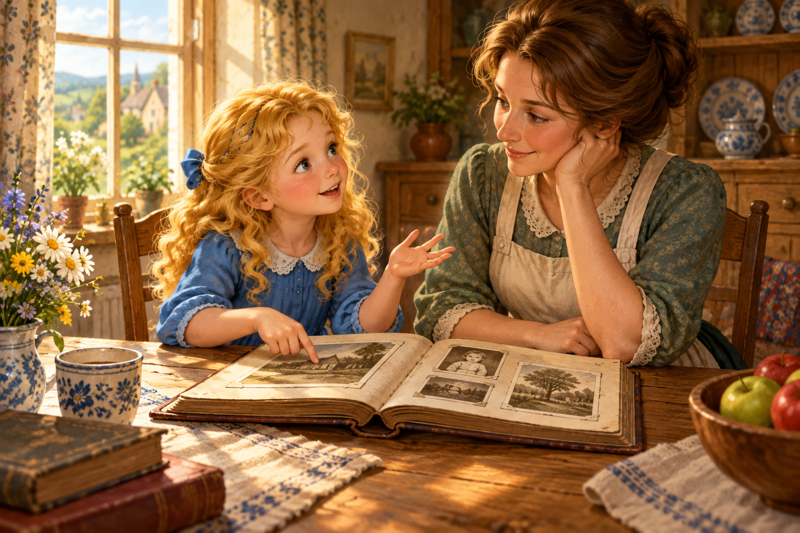

01
Practice / Speaking
Weather Call-Out Cards
Identify the weather and respond with a clear model sentence.
Open activityBasic English Course 2
Practice activities live here. This section is for oral production, recognition, guided repetition, classroom interaction, and applied use after the Course Overview explanations.

Weather, current actions, sports, and plans through listening, reading, grammar, and speaking.
Identify the weather and respond with a clear model sentence.
Open activity
Choose the correct -ing form and spot the spelling rule.
Open activity
Choose the sentence for a routine or an action happening now.
Open activity
Watch a weather conversation and check your understanding.
Open activity
Listen to a changing-weather plan and check key details.
Open activity
Read a short weather story and identify current actions.
Open activity
Listen, record, and improve weather and going-out pronunciation.
Open activity
Talk with Mia about weather and going-out plans.
Open activity
Respond to a weather card using the present continuous.
Open activity
Clothes, accessories, sizes, prices, and shopping language.
Find clothing pairs and say each item aloud.
Open activity
Choose this, that, these, or those from visual shopping scenes.
Open activity
Read the first part of a shopping story and check the details.
Open activity
Listen to the story continuation at a concert entrance.
Open activity
Listen, record, and improve shopping and concert language.
Open activity
Talk with Ella about shopping, clothes, and prices.
Open activity
Read price cards and answer aloud in dollars or Colombian pesos.
Open activity
Perform a clothing-store conversation in a pair or trio.
Open activity
Review Unit 2 shopping language in a teacher-led Kahoot.
Open activity
Describe places with precise vocabulary, comparatives, and superlatives.
Match useful adjectives for places and say each one aloud.
Open activity
Listen to two friends compare possible destinations.
Open activity

Choose the correct comparative form for places.
Open activity
Listen, record, and improve language for describing places.
Open activity
Talk with Ava about places, comparisons, and recommendations.
Open activity
Use world-place cards to make superlative sentences.
Open activity
Choose the correct superlative form in focused questions.
Open activity
Present a visual recommendation for a place with a group.
Open activity
Use the simple past with regular verbs and talk about past weekend experiences.
Choose regular past forms and identify each -ed sound.
Open activity
Listen, record, and improve /t/, /d/, and /ɪd/ pronunciation.
Open activity
Tell a weekend story using connectors and Unit 4 expressions.
Open activity
Read Daniel’s Saturday story before its audio continuation.
Open activity
Listen to the continuation and check Daniel’s past actions.
Open activity
Talk with Leo about your weekend experiences.
Open activity
Compare two weekends using past forms and comparatives.
Open activity
Practice 30 past verbs and nine short sentences.
Open activityDescribe past places, feelings, and memories with was and were.
Choose was, were, wasn’t, and weren’t in meaningful past contexts.
Open activityTurn through an illustrated book, hear the story, and check its key details.
Open activityCreate and present your team's new page 6 with an AI illustration.
Open activityListen, record and practice past forms and memories, word by word.
Open activity
Hear what happened next and follow the story through ten questions.
Open activityTurn a picture card, spin for a classmate, and answer with was or were.
Open activityShare a memory, hear Nora’s replies, and improve your spoken English.
Open activity
Spin, compare pictures, and correct statements with was or were.
Open activity
Listen to a holiday conversation and prepare for your integrated exam.
Open activity
Food, quantities, portions, and restaurant conversations.


Build phrases with cups, slices, bowls, and bottles.
Open activity
Find pairs, listen, and say each food aloud.
Open activity
Order, ask about ingredients, and share your opinion.
Open activity